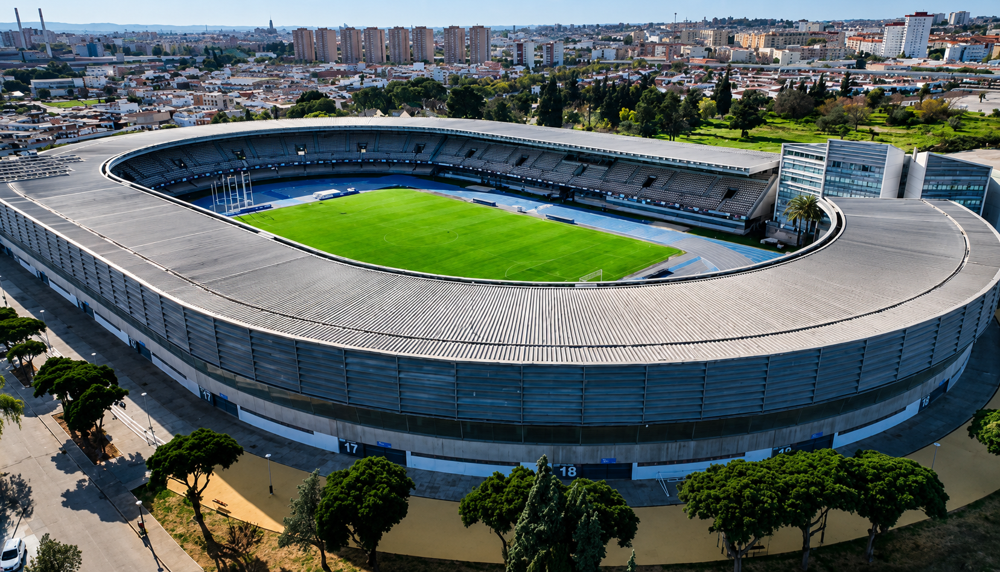

El césped que puede romper al Xerez CD: la bomba de relojería bajo los pies de la plantilla

Foto: PuroXerecismoEl estado del césped en el Pedro S. Garrido y en Chapín ha empezado a pasar factura en forma de lesiones y amenaza con condicionar el rendimiento de los equipos de la ciudad justo al arrancar la temporada.
Hay un problema en Jerez que lleva demasiado tiempo instalado en la conversación de la afición y que, sin embargo, parece no encontrar respuesta desde las instituciones: el estado del terreno de juego, tanto en el Pedro S. Garrido como en el propio Estadio Municipal de Chapín. No es una cuestión menor ni un simple lamento de aficionado exigente. Es un problema que ya ha empezado a pasar factura en forma de lesiones, y que, de no corregirse, puede acabar condicionando el rendimiento deportivo de los equipos de la ciudad justo cuando arranca una temporada cargada de ilusión.
El Pedro Garrido lleva meses arrastrando deficiencias en su sistema de riego, con zonas del campo secas e irregulares que se han convertido en un quebradero de cabeza para el club en plena pretemporada. No es casualidad que, en pleno verano, el Xerez CD haya tenido que sondear alternativas como Montecastillo o Costa Ballena para completar parte de sus entrenamientos, buscando una superficie más fiable sobre la que trabajar. Y tampoco es casualidad que Saúl Romero, uno de los fichajes más ilusionantes del verano, se fracturara el quinto metatarsiano durante una sesión rutinaria en ese mismo terreno de juego. Puede que en ese caso concreto la lesión respondiera a un gesto técnico y no a un simple bache en el césped, pero el episodio ha servido para poner el foco, una vez más, sobre unas instalaciones que no están dando la fiabilidad que un club profesional necesita.
El problema, además, no se limita al campo de entrenamiento. Chapín arrastra una realidad que pocas ciudades de la categoría tienen que gestionar: dos equipos, con calendarios, exigencias físicas y necesidades de mantenimiento propias, compartiendo el mismo césped a lo largo de toda la temporada. Esa carga de uso, entrenamientos incluidos en muchas ocasiones, deja un terreno de juego que llega a los partidos importantes sin el descanso ni el cuidado que necesitaría un césped de competición. Cualquier aficionado que haya pisado la grada en los últimos años sabe reconocer las calvas, los baches y las irregularidades que aparecen según avanza el curso, sobre todo en las zonas de mayor tránsito.
Y ahí es donde entra la parte que de verdad debería preocupar a clubes, afición e instituciones por igual: la salud de los futbolistas. Un césped en mal estado no es solo una cuestión estética o de juego bonito. Es un factor de riesgo real. Apoyos irregulares, giros bruscos sobre una superficie que no responde de forma homogénea, zonas más duras o más blandas de lo esperado; todo ello incrementa las probabilidades de esguinces, sobrecargas, fracturas por estrés y lesiones musculares que podrían evitarse con un mantenimiento adecuado. En categorías donde los clubes no siempre cuentan con los recursos de un cuerpo médico y de readaptación tan amplio como en Primera o Segunda División, cada baja pesa el doble, tanto en lo deportivo como en lo económico.
El Xerez CD tiene un nombre y una historia que pesan, una afición que sigue respondiendo pese a las dificultades y un proyecto que aspira a volver a lo más alto del fútbol andaluz. Pero ese esfuerzo choca de frente con unas infraestructuras que no siempre están a la altura de lo que se exige a sus futbolistas cada fin de semana. Invertir en el mantenimiento del césped, ya sea reforzando el sistema de riego del Pedro Garrido o revisando en profundidad el estado de Chapín, no debería verse como un gasto, sino como una inversión directa en la salud de los jugadores del Xerez CD y, por extensión, en el rendimiento deportivo del club. Lo contrario es seguir jugando, literalmente, con fuego.
La realidad, además, es que en el caso de Chapín un simple parche no va a solucionar el problema de fondo. Después de años de desgaste acumulado, lo que necesita el estadio municipal es levantar el césped por completo y renovarlo desde cero, una obra de calado que exige un desembolso económico importante y que, previsiblemente, no será fácil de asumir. Pero Jerez se merece un estadio a la altura de su gente y de su categoría, un césped digno de una ciudad que sostiene dos proyectos futbolísticos y, muy especialmente, de un Xerez CD que arrastra un nombre e historia que merecen jugar sobre una superficie en condiciones. No es un capricho: es una obra necesaria que las instituciones jerezanas no deberían seguir postergando.
← Volver a la portada